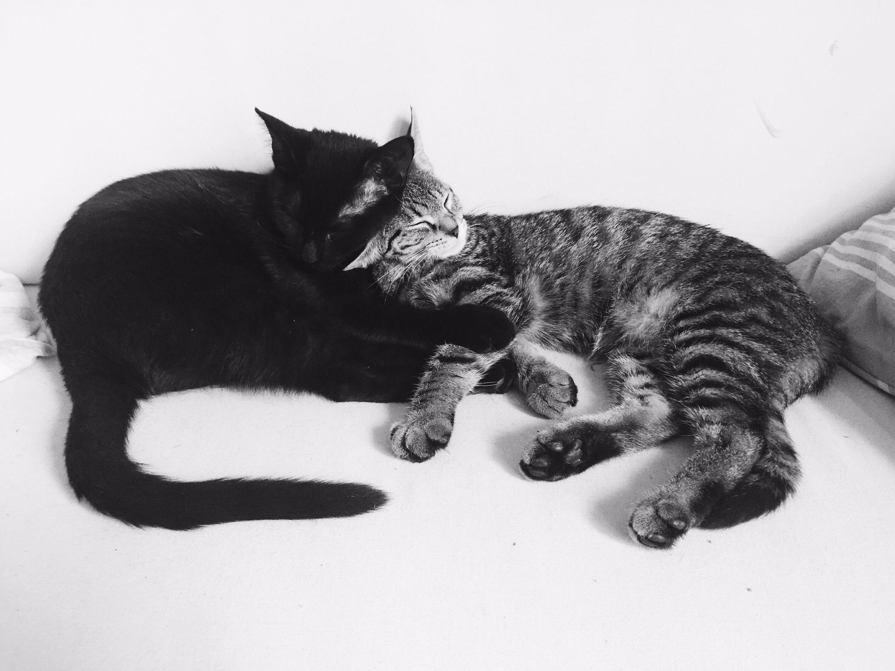

About Cats on Code
Jamie
The human behind the code.
A farm raised, free-range designer & developer. A year ago I decided I wanted to do more with other than make things look really, really ridiculously good looking.
Summer of 2014 was transformative as I first started learning web development through a Girl Develop It class that led me to attend and graduate from Dev Bootcamp by January 2015.
I freelanced as a web designer and developer until accepting a summer teaching position for a precollege program through The Flatiron School. Writing extensive notes for my lesson plans inspired the creation of this blog.
Find more of my work here: illbringthedonuts.com
Octo & Amper
The Cats Behind the Code

Octo (short for Octothorpe, black) & Amper (Ampersand, tabby) were adopted from PAWS chicago a month after I finished Dev Bootcamp. These little fur balls have kept me company through long hours of freelance coding at home. They've also better at making bugs than catching them.
The Blog
This blog is built using one of the most liberating blogging technologies; with Jekyll and hosted on Github pages with a custom domain slapped on it.